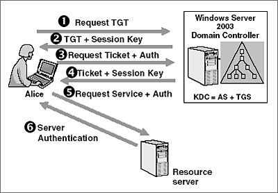
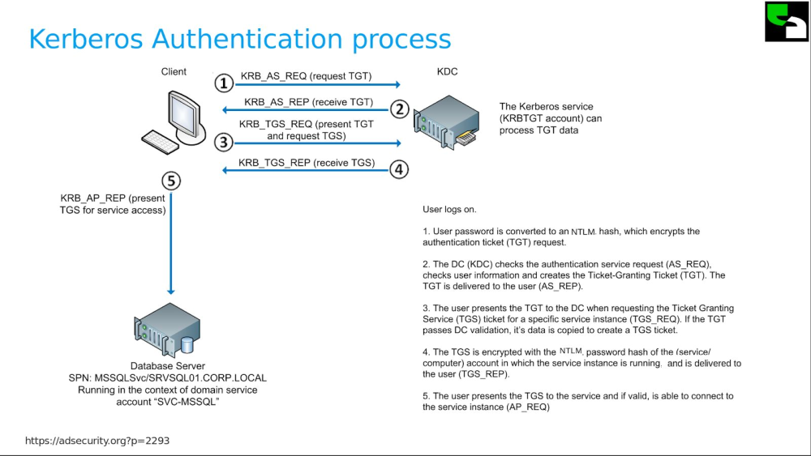
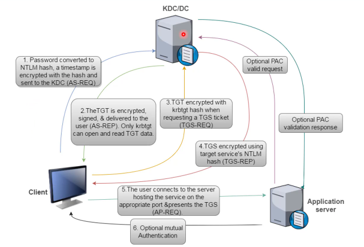

# Kerberos - Keberos Authentication Process
https://adsecurity.org/?p=227https://www.roguelynn.com/words/explain-like-im-5-kerberos/Kerberos authentication can be divided into 3 parts:
• Part 1 - Getting a TGT (to request a TGS)
• Part 2 - Getting a TGS (to access a service)
• Part 3 - Use TGS to Access Service
A TL;DR version of the Kerberos authentication process goes like this:
1. Client requests TGT from Kerberos
2. Client requests TGS from Kerberos using TGT
3. Client sends TGS to service -> request access to service
4. Service grants client access
## Part 1 - Getting a TGT
### 1. AS-REQ
Client authenticates with Kerberos server
Client sends their username, password, and the current system time
- If pre-auth enabled? -> data is encrypted with user's NTLM hash
- If pre-auth disabled? -> data not encrypted
### 2. AS-REP
VerifyPre-auth enabled? -> KDC decrypts AS_REQ with user's NTLM password hash
(which the KDC has in its database)
◇ KDC then verifies timestamp is within the valid time skew time (5 mins by default)
Reply• Kerberos replies to the client with
◇ A TGT -> encrypted it with
krbtgt account hash
◇ A TGS session key - indicates the TGT is valid to request a TGS for 20 minutes -> encrypted with users' NTLM password hash
## Part 2 - Getting a TGS Ticket for a Service
Client opens Outlook email -> Client workstation finds the Outlook Exchange mailbox server and queries Active Directory for the SPN - Service Principle Name - of the user running the mail service
### 3. TGS-REQ
Client sends TGT, TGS session key, and target server SPN,
and requests a TGS ticket to access to the service
### 4. TGS-REP
VerifyKDC verifies the TGS_REQ by decrypting the TGT with the
krbtgt account hash
Reply• KDC replies to the client with
◇ A TGS -> encrypted with NTLM password hash of target service (which the KDC has in its database)
▪ TGS includes: user's SID/group memberships
◇ A session key -> encrypted with user's session key (???)
## Part 3 - Access Service
### 5. AP-REQ
Client connects to service and presents its TGS
### 6. AP-REP
VerifyService decrypts the TGS with its own NTLM password hash.
Checks the user group membership's/SID inside the TGS to check if its allowed to access the service.
ReplyService replies to client with AP_REQ and grants client access to service.
## Diagrams
BEST VERSION:
